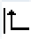
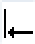
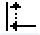

Stock removal - CYCLE952 - input complete
G code program parameters | | ShopTurn program parameters |
|---|
Input | |
PRG  | | | T | Tool name | |
PL | Machining plane | | | D | Cutting edge number | |
RP | Retraction plane – (only for machining direction, longitudinal, inner) | mm | F | Feedrate | mm/rev |
SC | Safety clearance | mm | S / V | Spindle speed or constant cutting rate | m/min |
F | Feedrate | * | | | |
Residual material | With subsequent residual material removal | | | | |
CONR | Name to save the updated blank contour for residual material removal | | | | |
Parameter | Description | Unit |
|---|
Machining
| ∇ (roughing) ∇∇∇ (finishing) ∇+∇∇∇ (complete machining) ∇ Prime (roughing PrimeTurningTM) ∇∇∇ Prime (finishing PrimeTurningTM)
| |
Machining
direction | Face Longitudinal Parallel to the contour
| | |
The machining direction depends on the stock removal direction and choice of tool. | |
Position | | |
D | Maximum depth infeed - (only for ∇) | mm |
DX | Maximum depth infeed - (only for parallel to the contour, as an alternative to D) | mm |
|   
| Always round on the contour Never round on the contour Only round to the previous intersection. | |
| | Uniform cut segmentation Round cut segmentation at the edge | |
 | Constant cutting depth Alternating cutting depth - (only with align cut segmentation to edge) | |
DZ | Maximum depth infeed - (only for position parallel to the contour and UX) | mm |
UX or U | Finishing allowance in X or finishing allowance in X and Z – (only for ∇) | mm |
UZ | Finishing allowance in Z – (only for UX) | mm |
DI | For zero: Continuous cut - (only for ∇) | mm |
BL | Blank description (only for ∇) Cylinder (described using XD, ZD) Allowance (XD and ZD on the finished part contour) Contour (additional CYCLE62 call with blank contour – e.g. cast iron mold)
| |
XD | - (only for ∇ machining) - (only for blank description, cylinder and allowance) For blank description, cylinder For blank description, allowance
| mm |
ZD | - (only for ∇ machining) - (only for blank description, cylinder and allowance) For blank description, cylinder For blank description, allowance
| mm |
Allowance | Allowance for pre-finishing - (only for ∇∇∇) Yes U1 contour allowance No
| |
U1 | Compensation allowance in X and Z direction (inc) – (only for allowance) | mm |
Set machining area limits | Set machining area limits | |
XA XB ZA ZB | With limited machining area only, yes: 1. Limit XA ∅ 2. Limit XB ∅ (abs) or 2nd limit referred to XA (inc) 1. Limit ZA 2. Limit ZB (abs) or 2nd limit referred to ZA (inc) | mm |
Relief cuts | Machine relief cuts | |
FR | Insertion feedrate, relief cuts | |
* Unit of feedrate as programmed before the cycle call
| Note |
PrimeTurning™ is special type of path generation for prime turning tools, which allows machining in all directions. This allows productivity to be increased. Not all parameters are listed in the input mask when using PrimeTurning™. |
See also:
Stock removal function - (CYCLE952)
Machining plane, milling direction, retraction plane, safe clearance and feedrate (PL, RP, SC, F)
Tool, offset value, feedrate and spindle speed (T, D, F, S, V)